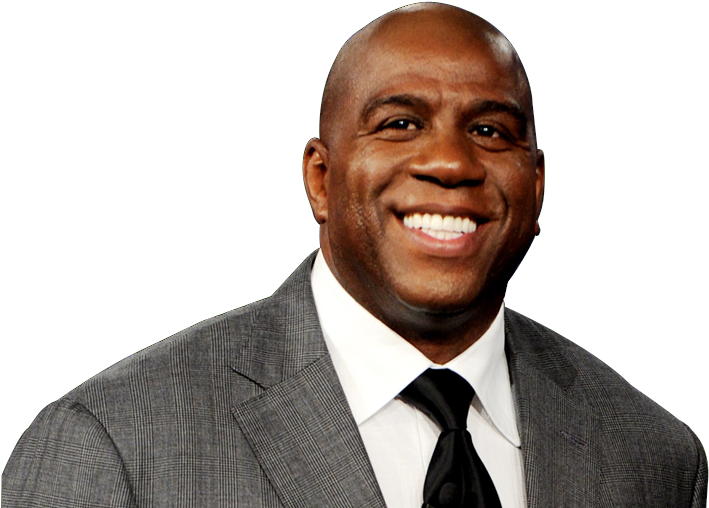
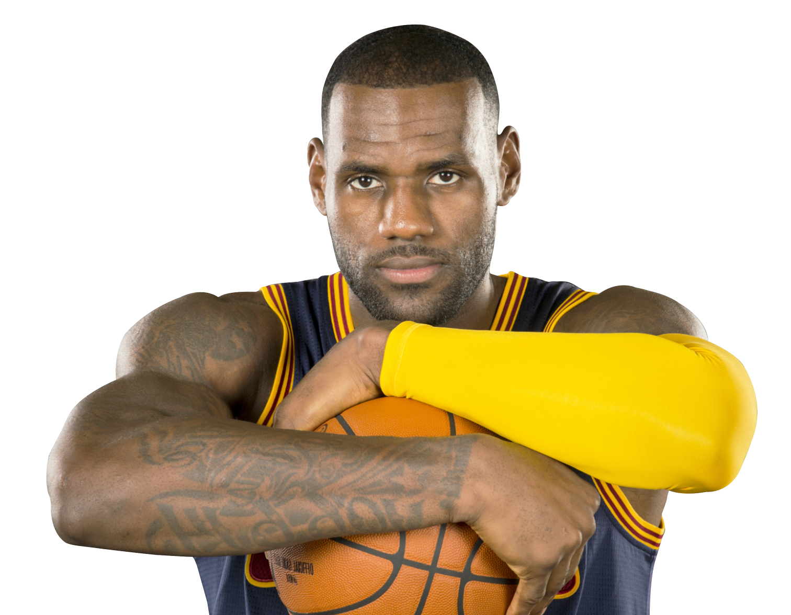
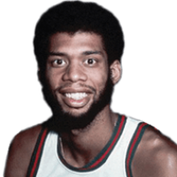

Die größten Legenden der NBA
Die besten Spieler aller Zeiten
Die besten Point Guards aller Zeiten

- Magic Johnson ist wahrscheinlich der beste Point Guard jemals mit 5 Championships, 3 MVPs und Passfähigkeiten wie kein Anderer
- Stephen Curry macht Magic den 1. Platz schon streitig mit seinen 4 Championships und 2 MVPs, abgesehen davon, dass er das Spiel mit seinen Wurf-skills revolutionierte
- John Stockton sichert sich den hart umstrittenen 3. Platz für uns mit den meisten Assists aller Zeiten
Die besten Shooting Guards aller Zeiten

- Michael Jordan ist die unangefochtene 1 auf seiner Position und auch für viele der Beste aller Zeiten, dank seiner vielen Erfolge und Leistungen
- Kobe Bryant landet mit seiner legendären Mamba Mentality hinter seinem Idol MJ. Durch seinen langanhaltenden Erfolg mit den Lakers sichert er sich Platz 2
- Dwyane Wade ist unser Platz 3. Die Miami Heat Legende überzeugt mit seiner unglaublichen Athletik und Explosivität
Die besten Small-Forwards aller Zeiten

- LeBron James sichert sich Platz 1 mit unzähligen Rekorden in allen möglichen Kategorien und der unglaublichen Langleblichkeit seiner Fähigkeiten
- Larry Bird dominiert die Liste der Small Forwards gleich wie die NBA in den 80er Jahren mit seinen 3 MVPs hintereinander
- Kevin Durant macht seinen Verteidigern mit seinen vielfälltigen Scoring-Fähigkeiten die sonst niemand mit seiner Größe hat, die Hölle heiß
Die besten Power-Forwards aller Zeiten

- Das Mittelstück der langen Spurs-Dynastie Tim Duncan dominierte als einer der besten defensiven Spieler aller Zeiten die NBA für mehrere Jahre
- Dirk Nowitzki revolutionierte das Spiel auf seiner Position und sorgte dafür, dass heutzutage auch Riesen den Ball aus weiter Distanz durch Netz bringen
- Kevin Garnetts Vertaidigung machte den Angreifern für ganze 21 Saisons das Leben schwer, was jedoch nur für 1 DPOY-Award reichte
Die besten Centers aller Zeiten

- Kareem Abdul-Jabbar hat mit ganzen 6 MVPs die meisten der Geschichte, noch dazu besaß er bis vor kurzem den Rekord für die meisten Punkte aller Zeiten
- Shaquille O'Neal dominierte seitdem er in der NBA ist. Seine Dominanz reichte für 4 Championships, 1 MVP und sogar ein paar kaputte Körbe
- Wilt Chamberlains Statistiken sind so gut, dass viele sie für Fake halten. Er erzielte mit 100 Punkten die meisten in einem Spiel jemals